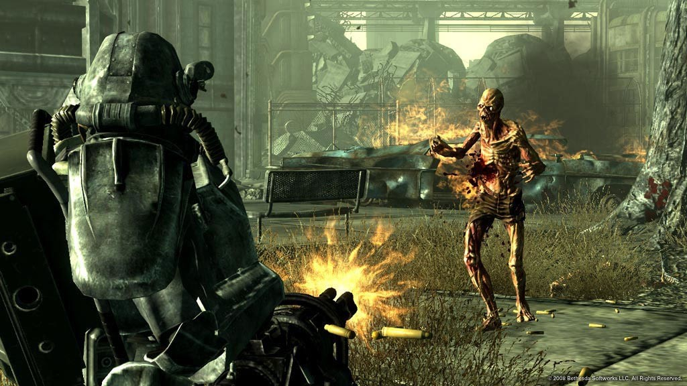

The Sony PlayStation 3
(PS3) is a home video game console developed by Sony Computer Entertainment. It is the successor to PlayStation 2, and is part of the PlayStation brand of consoles. It was first released on November 11, 2006, in Japan, November 17, 2006, in North America, and March 23, 2007, in Europe and Australia. The PlayStation 3 competed mainly against consoles such as Microsoft's Xbox 360 and Nintendo's Wii as part of the seventh generation of video game consoles. The console was first officially announced at E3 2005, and was released at the end of 2006. It was the first console to use Blu-ray Disc as its primary storage medium. The console was the first PlayStation to integrate social gaming services, including the PlayStation Network, as well as the first to be controllable from a handheld console, through its remote connectivity with PlayStation Portable and PlayStation Vita. In September 2009, the Slim model of the PlayStation 3 was released. It no longer provided the hardware ability to run PS2 games. It was lighter and thinner than the original version, and featured a redesigned logo and marketing design, as well as a minor start-up change in software. A Super Slim variation was then released in late 2012, further refining and redesigning the console.

Fallout 3.
During its early years, the system had a critically negative reception, due to its high price ($599 for a 60 gigabyte model, and $499 for a 20 GB model), a complex processor architecture and a lack of quality games, but was praised for its Blu-ray capabilities and "untapped potential". The reception would get more positive over time. The system had a slow start in the market but managed to recover, particularly after the introduction of the Slim model. Its successor, the PlayStation 4, was released later in November 2013. On September 29, 2015, Sony confirmed that sales of the PlayStation 3 were to be discontinued in New Zealand, but the system remained in production in other markets. Shipments of new units to Europe and Australia ended in March 2016, followed by North America which ended in October 2016. Heading into 2017, Japan was the last territory where new units were still being produced until May 29, 2017, when Sony confirmed the PlayStation 3 was discontinued in Japan.
The PlayStation 3 began development in 2001 when Ken Kutaragi, then the President of Sony Computer Entertainment, announced that Sony, Toshiba, and IBM would collaborate on developing the Cell microprocessor. At the time, Shuhei Yoshida led a group of programmers within this hardware team to explore next-generation game creation. By early 2005, focus within Sony shifted towards developing PS3 launch titles. Sony officially unveiled PlayStation 3 to the public on May 16, 2005, at E3 2005, along with a boomerang-shaped prototype design of the Sixaxis controller. A functional version of the system was not present there, nor at the Tokyo Game Show in September 2005, although demonstrations (such as Metal Gear Solid 4: Guns of the Patriots) were held at both events on software development kits and comparable personal computer hardware. Video footage based on the predicted PlayStation 3 specifications was also shown (notably a Final Fantasy VII tech demo).
The initial prototype shown in May 2005 featured two HDMI ports, three Ethernet ports and six USB ports; however, when the system was shown again a year later at E3 2006, these were reduced to one HDMI port, one Ethernet port and four USB ports, presumably to cut costs. Two hardware configurations were also announced for the console: a 20 GB model and a 60 GB model, priced at US$499 (€499) and US$599 (€599), respectively.[29] The 60 GB model was to be the only configuration to feature an HDMI port, Wi-Fi internet, flash card readers and a chrome trim with the logo in silver. Both models were announced for a simultaneous worldwide release: November 11, 2006, for Japan and November 17, 2006, for North America and Europe.